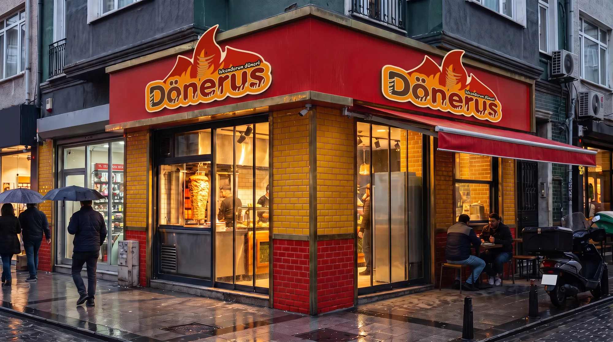

Kendi şehrinizde bir Dönerus açın.
İskenderun usulü bir lezzeti, hazır işletme sistemi ve açılıştan sonra da süren destekle birlikte devralın.
Bir dönerciden fazlası.
Lezzeti her şubede aynı tutmak için sistem, eğitim ve tedarik bir arada.
Standart tarif
İskenderun usulü tarif, her şubeye merkezden ulaşan et ve şiş.
Dönerus Akademi
Ustanız ve ekibiniz açılıştan önce uygulamalı eğitimden geçer.
Anahtar teslim kurulum
Mimari proje, mutfak ekipmanı, tabela ve dekorasyon tek elden yürütülür.
Merkezi pazarlama
Ulusal kampanyalar, sosyal medya ve yemek platformu yönetimi merkezden yapılır.
Soğuk zincir tedarik
Düzenli sevkiyat, dijital sipariş ve stok takibi.
Bölge koruması
Sözleşmeyle tanımlanan bölgede ikinci bir Dönerus açılmaz.
Rakamlar, açık ve net.
Kesin tutarlar lokasyona göre ön görüşmede paylaşılır. Ayrıntılı tablo yatırımcı rehberinde.
Başvurudan açılışa altı adım.
Ortalama süre: başvurudan açılışa 90–120 gün.
Başvuru
Online formu doldurun, ekibimiz 48 saat içinde arar.
Tanışma
Genel müdürlükte yüz yüze görüşme ve şube ziyareti.
Lokasyon
Önerdiğiniz yerin trafik ve rakip analizi, onay.
Sözleşme
Franchise sözleşmesi ve proje takvimi imzalanır.
Kurulum ve eğitim
Anahtar teslim kurulum, ekibinize akademi eğitimi.
Açılış
Açılış ekibimiz ilk iki hafta şubenizde.

Açılıştan sonra da yanınızdayız.
EğitimUsta, kasa ve servis eğitimi
OperasyonBölge sorumlusu ve düzenli denetim
TedarikEt, ekmek, ambalaj tek merkezden
PazarlamaUlusal kampanya ve açılış planı
TeknolojiKasa, stok ve paket servis yazılımı
KaliteGizli müşteri ve laboratuvar testleri
MimariProje, dekorasyon ve tabela
İnsan kaynaklarıPersonel seçimi ve bordro desteği
Merak edilenler
Sorunuzun cevabı burada yoksa franchise ekibimize yazın: franchise@donerus.com.tr
Sektör deneyimim olmadan başvurabilir miyim?
Evet. Deneyim avantajdır ama şart değildir. İşletmenin başında bizzat bulunmanızı ve akademi eğitimini tamamlamanızı bekliyoruz.
Lokasyonu ben mi bulmalıyım?
Önerdiğiniz lokasyonu birlikte değerlendiririz. Henüz bir yeriniz yoksa bölgenizdeki uygun lokasyonları birlikte ararız.
AVM ve cadde şubesi arasında fark var mı?
Evet. AVM şubeleri daha küçük metrekare ve kısa çalışma saatiyle, cadde şubeleri oturma alanı ve paket servisle tasarlanır. Yatırım tablosu her ikisi için ayrı hazırlanır.
Sözleşme süresi ne kadar?
Sözleşme süresi ve yenileme koşulları yatırımcı rehberinde ve franchise sözleşmesinde yer alır.
Malzemeleri kendim tedarik edebilir miyim?
Lezzet standardı için et, ekmek, sos ve ambalaj merkezden tedarik edilir. Sebze ve içecek gibi kalemlerde onaylı yerel tedarikçiler kullanılabilir.
Ne zaman kâra geçerim?
Bu, lokasyon ve işletme performansına bağlıdır. Mevcut şubelerin performans verileri ön görüşmede, gizlilik sözleşmesi sonrasında paylaşılır.
Bir sonraki Dönerus'nu siz açın.
Formu doldurmak yaklaşık 3 dakika sürer. Bilgileriniz yalnızca başvurunuzun değerlendirilmesi için kullanılır.
Franchise başvuru formu
- 1Kişisel bilgiler
- 2Mesleki geçmiş
- 3Yatırım planı
- 4Son adım
Başvurunuz franchise ekibimizin paneline anında düşer. 48 saat içinde size dönüş yapılır.